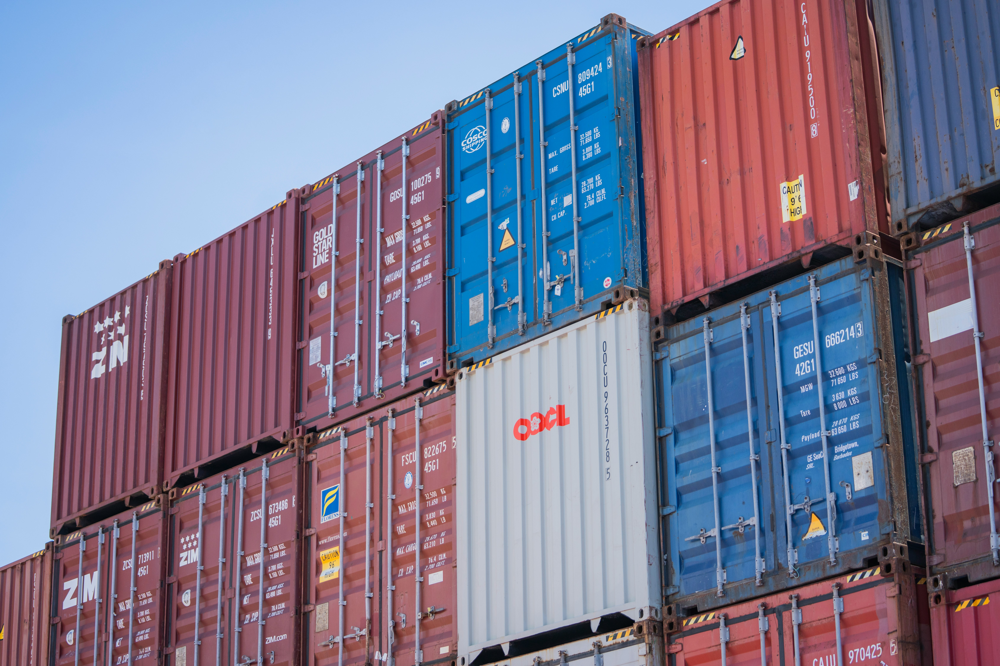

WAREHOUSING & LOGISTICS
倉儲物流
我們提供貨櫃與貨物的倉儲、裝卸、拆裝櫃及場站管理服務，整合碼頭、貨櫃場與 CFS 倉庫作業，協助客戶完成貨櫃進出站、貨物裝櫃出站及後續轉運。

服務內容
- 貨櫃進出站與存放管理
- 貨物裝櫃與拆櫃
- CY 整櫃碼頭作業
- CFS 倉庫作業
- 保稅倉庫

WAREHOUSING & LOGISTICS
我們提供貨櫃與貨物的倉儲、裝卸、拆裝櫃及場站管理服務，整合碼頭、貨櫃場與 CFS 倉庫作業，協助客戶完成貨櫃進出站、貨物裝櫃出站及後續轉運。
CONTAINER CLEANING & REPAIR
配合場站與航商需求安排洗櫃、修櫃及貨櫃狀況處理，協助貨櫃維持良好使用狀態。

EQUIPMENT MAINTENANCE & SALES
提供港區與場區機具的維修、保養、銷售及保固服務，協助設備穩定運轉，降低作業中斷。